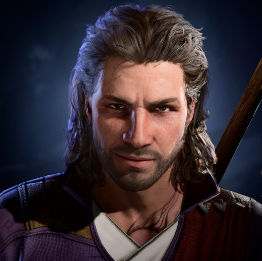
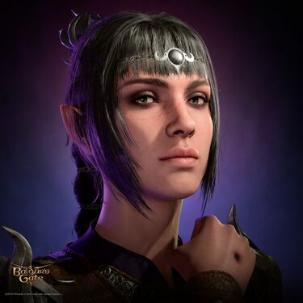
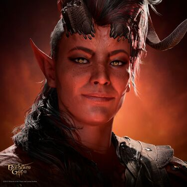
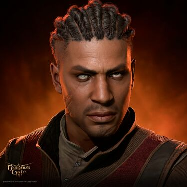

Adventuring Party
These are some of the companions you'll meet in the world of Baldur’s Gate 3. Powerful, complex allies whose fates intertwine with your own. You may choose to journey as one of them or forge your own path with an original character. All heroes, haunted or hopeful, are welcome at our table.
| Portrait | Name | Race | Class | Level | Weapon |
|---|---|---|---|---|---|
 |
Astarion | High Elf | Rogue | 1 | Daggers |
|  | Gale | Human | Wizard | 1 | Staff |
|  | Shadowheart | Half-Elf | Cleric | 1 | Spears |
|  | Karlach | Tiefling | Barbarian | 1 | Greataxe |
|  | Wyll | Human | Warlock | 1 | Rapiers |
 |
Lae'zel | Githyanki | Fighter | 1 | Longsword |